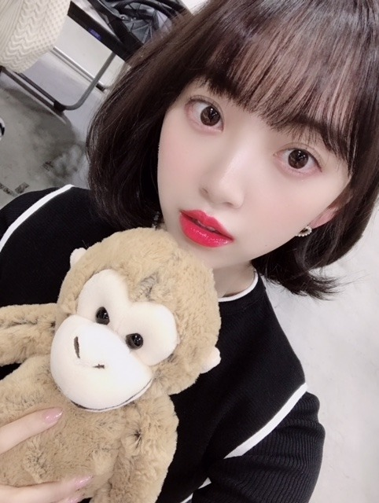
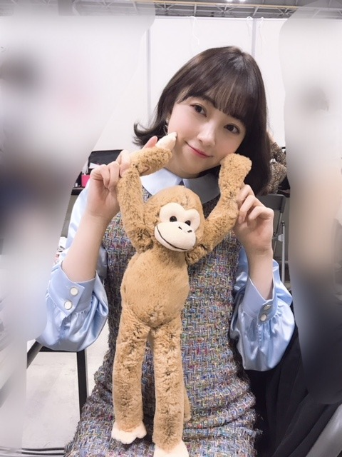
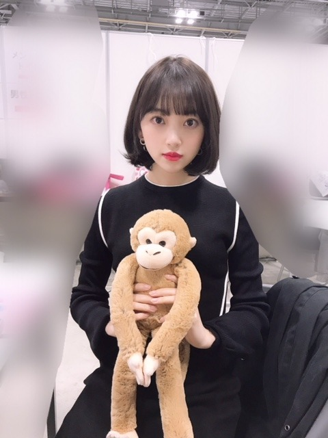
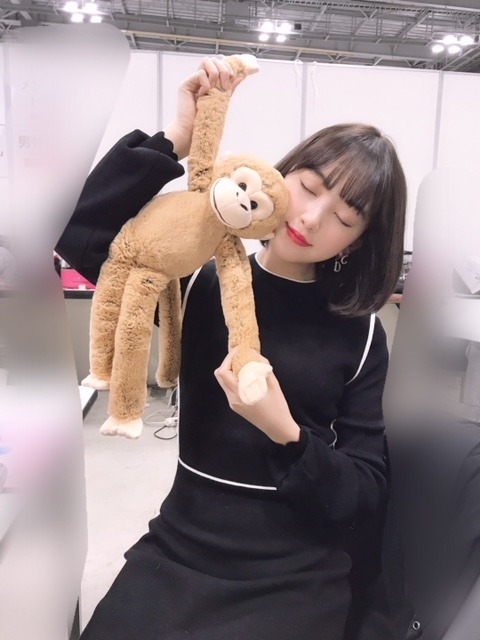
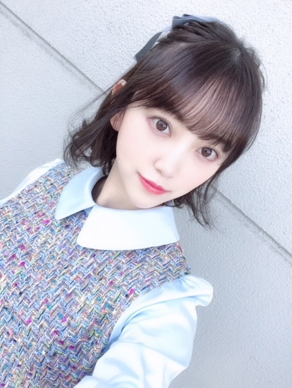

2019/0218Mon温泉に入るお猿さん
やっばりいつかお猿さん飼いたいな〜




癒し(^-^)
黒のワンピースとトップスはZARA
水色のワンピースはIMVERYのです✨

ハーフアップ最近好き！
明日は楽しみなことがありますの。
ふふ
ではでは☺︎
2019/02/18 16:36
コメント(361)
未央奈〜こんばんは！
温泉に入るお猿さん。
好きだなぁ。笑
やっばりお猿さん飼いたいのかー！
お！この前の握手会の写真！
未央奈かっこいいしかわいかったよ！！
ハートのイヤリングもほんとかわいいっす。
ODENくん。笑
手も足も長いなー
いいね、なんか。笑う
癒し(^-^)
服装もメイクも超好き！✨
ハーフアップもかわいっ！
え、超かわいい。
(さっきからかわいいしか言えない人。
わー！明日の楽しみなことが気になる！！
うふふ。
(何があるのか検討もつかないけどとりあえず笑っておこっと♪
ではでは〜！
おやすみおな〜☺︎
温泉に入るお猿さん。
好きだなぁ。笑
やっばりお猿さん飼いたいのかー！
お！この前の握手会の写真！
未央奈かっこいいしかわいかったよ！！
ハートのイヤリングもほんとかわいいっす。
ODENくん。笑
手も足も長いなー
いいね、なんか。笑う
癒し(^-^)
服装もメイクも超好き！✨
ハーフアップもかわいっ！
え、超かわいい。
(さっきからかわいいしか言えない人。
わー！明日の楽しみなことが気になる！！
うふふ。
(何があるのか検討もつかないけどとりあえず笑っておこっと♪
ではでは〜！
おやすみおな〜☺︎
未央奈さんホントに可愛い
好きです
好きです
堀さん、こんばんは。
3枚目の写真の謎の女感いいですね。
温泉猿の動画検索したら面白かったです。猿達は寒くて温泉入ってるのなら、小さいコタツ置いといたらカワイイ絵が撮れそうですね。
食あたりかストレスか分かりませんけど良くなるように祈ってます。ライブ本番以外での無理はしないでくださいね。
ちなみにメガネウラは大昔に居た70センチのトンボです。
3枚目の写真の謎の女感いいですね。
温泉猿の動画検索したら面白かったです。猿達は寒くて温泉入ってるのなら、小さいコタツ置いといたらカワイイ絵が撮れそうですね。
食あたりかストレスか分かりませんけど良くなるように祈ってます。ライブ本番以外での無理はしないでくださいね。
ちなみにメガネウラは大昔に居た70センチのトンボです。
髪は短い方が良く似合う♪
メイクはナチュラル系の方が好き。
あくまでも個人的感想やけど(^_^;)
ライブ頑張ってね。
メイクはナチュラル系の方が好き。
あくまでも個人的感想やけど(^_^;)
ライブ頑張ってね。
みおな可愛い～すき～
おはみおな♪ヽ(￣▽￣)ノ最近の堀♪画像が綺麗・・・なのは？本人の成長？画質の向上？(゜ロ゜) 正解は堀ちゃん♪ヽ(´▽｀)/が知っている‼️ヽ(￣▽￣)ノ
堀さん、おはようございます。
堀さんのお猿さん好きはブレないですね（うっきー 笑）。堀さんとツーショットのぬいぐるみクン、うらやましいぞ。
不思議なもので、おすまし顔の堀さんと一緒だとお猿さんもすまし顔に、笑顔の堀さんと一緒のお猿さんは笑顔に、それぞれ違った表情に見えるのものですね。
さてさて、念願かなって堀さんがお猿さんを飼うのと、与田さんがポニーを飼うのと、はたしてどちらが早いか楽しみです（にやり）。
よいことが待っている日は心弾みますね。どうぞ佳き日をおすごしください。
ではまたコメント寄せます。
さらばだ、また会おう！（気球に乗って去りぬ〜）
堀さんのお猿さん好きはブレないですね（うっきー 笑）。堀さんとツーショットのぬいぐるみクン、うらやましいぞ。
不思議なもので、おすまし顔の堀さんと一緒だとお猿さんもすまし顔に、笑顔の堀さんと一緒のお猿さんは笑顔に、それぞれ違った表情に見えるのものですね。
さてさて、念願かなって堀さんがお猿さんを飼うのと、与田さんがポニーを飼うのと、はたしてどちらが早いか楽しみです（にやり）。
よいことが待っている日は心弾みますね。どうぞ佳き日をおすごしください。
ではまたコメント寄せます。
さらばだ、また会おう！（気球に乗って去りぬ〜）
猿！イイねー♪＼(^o^)／
カワイイ写真ありがとう！(^_-)
カワイイ写真ありがとう！(^_-)
未央奈ちゃんおはようございます！ありがとうございます‼楽しみにしてます‼頑張ります‼頑張って下さい。ありがとうございます！
未央奈ちゃん更新ありがとー！
猿とお散歩してる未央奈ちゃんを想像してみたんだけど、
なんか似合うというか、シュールというか、、
可愛いことは確かです！
好きだー！！
猿とお散歩してる未央奈ちゃんを想像してみたんだけど、
なんか似合うというか、シュールというか、、
可愛いことは確かです！
好きだー！！
未央奈 おはよう！
お猿 可愛いよね！
ODENちゃんもね！
友達がリスザル飼ってるよ！
もう、すごいイタズラ好きの女の子。
でもね、オムツ履いてて無茶苦茶可愛い！
シベリアンハスキーの背中に乗って散歩してる。
犬猿の仲って何って感じ？って思うほど仲が良くてね、
いつも、悶絶してます。
なんだろうね？歌のパワーって、
未央奈の755 のきっかけで、久しぶりにYUIを聴いてね、
仕事中の怪我に、物凄く忙しい毎日に、ここ最近の体調の悪さに、嫌気がさしてたのに、
不思議と何だかね、もうひと足掻きしてみようとね。
単純だからなのかな？って思うけどね。
だからね、バスラ 楽しんでね。
未央奈がバスラを楽しんでると、みんなのパワーになるから。
あっ、今自分のおススメのアーティストは、
「ビッケブランカ」
です。
未央奈は未央奈のままで、
最高の笑顔を！
お猿 可愛いよね！
ODENちゃんもね！
友達がリスザル飼ってるよ！
もう、すごいイタズラ好きの女の子。
でもね、オムツ履いてて無茶苦茶可愛い！
シベリアンハスキーの背中に乗って散歩してる。
犬猿の仲って何って感じ？って思うほど仲が良くてね、
いつも、悶絶してます。
なんだろうね？歌のパワーって、
未央奈の755 のきっかけで、久しぶりにYUIを聴いてね、
仕事中の怪我に、物凄く忙しい毎日に、ここ最近の体調の悪さに、嫌気がさしてたのに、
不思議と何だかね、もうひと足掻きしてみようとね。
単純だからなのかな？って思うけどね。
だからね、バスラ 楽しんでね。
未央奈がバスラを楽しんでると、みんなのパワーになるから。
あっ、今自分のおススメのアーティストは、
「ビッケブランカ」
です。
未央奈は未央奈のままで、
最高の笑顔を！
[乃木坂工事中] ※2018/08/20 に公開
白石麻衣×堀未央奈 ☆★☆おサル｢ホーリー｣☆★☆コント
↑↑ 堀未央奈ちゃんの かわいい動画が 記憶に残る！！ (^_-)-☆
体に気を付け ご活躍下さい！！ (^。^)y-.。o○
白石麻衣×堀未央奈 ☆★☆おサル｢ホーリー｣☆★☆コント
↑↑ 堀未央奈ちゃんの かわいい動画が 記憶に残る！！ (^_-)-☆
体に気を付け ご活躍下さい！！ (^。^)y-.。o○
愛知のモンキーパークも遊びにきて！
もぅ春だね！
春未央奈！
ではまた！
もぅ春だね！
春未央奈！
ではまた！
ブログありがとー
お猿さん最近見ると未央奈を思い出すようになったー
楽しみってなにー ✨
お猿さん最近見ると未央奈を思い出すようになったー
楽しみってなにー ✨
お猿さんもみおなちゃんに愛されて幸せだねライブの準備また頑張ってね
静岡県の波勝崎というところに猿がたくさんいますよ^ - ^今度行ってみてください！
未央奈、めっちゃ可愛い。猿になりたいよぉ。かわうそでもいいけど。
猿の被り物も、スッゴク可愛かったよなぁ
みおなー！
お疲れ様！
楽しみなことってなんだろなーーー！
気になるやん笑笑
お猿さんかえるといいねwwww
山に住んでみたらいいよw
ではでは！
バスラ頑張ってね！
みおならしく頑張って
お疲れ様！
楽しみなことってなんだろなーーー！
気になるやん笑笑
お猿さんかえるといいねwwww
山に住んでみたらいいよw
ではでは！
バスラ頑張ってね！
みおならしく頑張って
こんにちは。
未央奈お猿さん好きだねー、
｢ブッシュベイビー｣ってアニメ知ってる？
昔｢世界名作劇場｣ってので放送してたのをふと思い出した。
黒ワンピに赤リップが印象的。。
未央奈お猿さん好きだねー、
｢ブッシュベイビー｣ってアニメ知ってる？
昔｢世界名作劇場｣ってので放送してたのをふと思い出した。
黒ワンピに赤リップが印象的。。
可愛い写真いっぱい！
ハーフアップもやっぱり似合ってますね！
ハーフアップもやっぱり似合ってますね！
未央奈大好きなのに、握手会で全然話せなかった(T ^ T)
うちにもいます。
見つけたときは プレゼント用 と思って買ったけど、サル好きが周りに思い当たらない とか 可愛い過ぎて手放すのが惜しくなった…とか で結果うちのコです。
同じくらいの大きさ 名前はついていない
ライブ がんばって下さいー。
見つけたときは プレゼント用 と思って買ったけど、サル好きが周りに思い当たらない とか 可愛い過ぎて手放すのが惜しくなった…とか で結果うちのコです。
同じくらいの大きさ 名前はついていない
ライブ がんばって下さいー。
チャァオ～～!☆彡
ハーフアップのみおちゃ～～⤴️⤴️ん❕❤️❤️❤️❤️❤️・・・
神的、綺麗ぃ～～～⤴️⤴️❕❤️❤️❤️❤️❤️笑顔
最高に綺麗ぃ～～～⤴️⤴️❕❤️❤️❤️❤️❤️笑顔
それじゃ～みおちゃん
バイビィ～～～⤴️⤴️❕❤️❤️❤️❤️❤️笑顔
ヾ(@゜▽゜@)ノ❤️❤️❤️❤️❤️
お仕事頑張ってねぇ❕❤️❤️❤️❤️❤️笑顔
(*^▽^)/★*☆♪❤️❤️❤️❤️❤️
☆大人しい、おすまし！より☆彡
更新ありがとう！
お疲れ様でした！
何時も可愛いわ
頑張りや
めっちゃ好きやで
お疲れ様でした！
何時も可愛いわ
頑張りや
めっちゃ好きやで
長野の渋温泉は行ったことある？
もしまだ行って無かったら、お母さんと一緒に行ってみてください
スノーモンキー（温泉に入るお猿さん）が見れますよ
 でJR長野駅から長野電鉄に乗り換えて湯田中駅まで
でJR長野駅から長野電鉄に乗り換えて湯田中駅まで
お泊まりは「千と千尋」の湯屋の舞台になった「金具屋」がお勧めです
 の残っている間がやっぱり
の残っている間がやっぱり
もしまだ行って無かったら、お母さんと一緒に行ってみてください
スノーモンキー（温泉に入るお猿さん）が見れますよ
お泊まりは「千と千尋」の湯屋の舞台になった「金具屋」がお勧めです
未央奈ブログ更新ありがとう！
水色のワンピースいいね。
ボブもハーフアップも似合ってて可愛い！
この前の握手会行けなかったのが残念。
ODENくんも可愛いね。
楽しみなことってなんだろ？教えてー。
水色のワンピースいいね。
ボブもハーフアップも似合ってて可愛い！
この前の握手会行けなかったのが残念。
ODENくんも可愛いね。
楽しみなことってなんだろ？教えてー。
堀さん可愛い
色んな髪型似合うって素敵ですね
色んな髪型似合うって素敵ですね
みおちゃん
胃が痛い…何か大きなストレスを抱えている…？というかいくら二人が仲良しだとはいえ、そんなことまで一緒でなくてもよろしい（苦笑）絢音様もみおちゃんも心配だよ。お大事にね☆(^ ^)
どうやら元気みたいだね✨(^ ^)良かった良かった♪
待って？なんかめっちゃ元気じゃん？まー、んならそのほうがいーけど！(^ ^)
胃が痛い…何か大きなストレスを抱えている…？というかいくら二人が仲良しだとはいえ、そんなことまで一緒でなくてもよろしい（苦笑）絢音様もみおちゃんも心配だよ。お大事にね☆(^ ^)
どうやら元気みたいだね✨(^ ^)良かった良かった♪
待って？なんかめっちゃ元気じゃん？まー、んならそのほうがいーけど！(^ ^)
リスザルとかなら、ペットとして飼ってる人はいるみたいですね！
明日…というか今日の楽しみなことって、何かなぁ。
今、その最中かな？☆
明日…というか今日の楽しみなことって、何かなぁ。
今、その最中かな？☆
未央奈かわいい
今の髪型似合ってるよ！
明日から沖縄修学旅行なんだ
みおな不足になっちゃう...。
じゃ！お仕事頑張ってください


今の髪型似合ってるよ！
明日から沖縄修学旅行なんだ
みおな不足になっちゃう...。
じゃ！お仕事頑張ってください
可愛い♡
お猿さんかわいいよね
スノーモンキー会いに行けるといいね
ブルーレイ大賞アンバサダーお疲れさま
是枝監督作品への出演期待しちゃうなぁ
スノーモンキー会いに行けるといいね
ブルーレイ大賞アンバサダーお疲れさま
是枝監督作品への出演期待しちゃうなぁ
こんばんは
ブルーレイ大賞授賞式に参加したのですね！
プレゼンターとしての勇姿も誇らしいですし
ハッピーブルーの意味もよく分かりました♪
映画「シェイプ・オブ・ウォーター」は、
今までの概念にない恋愛がとても素敵だし、
不可能を可能にする事も素晴らしいですね！
映画「グレイテスト・ショーマン」では、
コンプレックスをバネにする勇気が凄いし、
見習うべき姿を色々といっぱい感じました！
それにしても、映画とは素晴らしいですね☆
未央ちゃんには更にまた、、
心をわしづかみにされましたよ♡
またお話を聞かせて下さいね～☺
ブルーレイ大賞授賞式に参加したのですね！
プレゼンターとしての勇姿も誇らしいですし
ハッピーブルーの意味もよく分かりました♪
映画「シェイプ・オブ・ウォーター」は、
今までの概念にない恋愛がとても素敵だし、
不可能を可能にする事も素晴らしいですね！
映画「グレイテスト・ショーマン」では、
コンプレックスをバネにする勇気が凄いし、
見習うべき姿を色々といっぱい感じました！
それにしても、映画とは素晴らしいですね☆
未央ちゃんには更にまた、、
心をわしづかみにされましたよ♡
またお話を聞かせて下さいね～☺
未央奈こんばんは～
未央奈が猿の人形で遊んでいる写真が可愛すぎて癒されたよ。
未央奈が一番好きな(飼いたい)猿ってなに？
俺は日本猿が一番可愛いと思っていたんだけど、この前、動物園に行ったらワオキツネザルがいて、モフモフの尻尾に惹かれてしまった。
だから日本猿とワオキツネザルで迷ってるよ。
この前の握手会、お疲れ様でした。
時間がなくて上手く説明できなかったんだけど、未央奈のチケットフォルダーに貼っていたチワワシールは「チワワ＝ニコルくん」と思って買ったんだけだ、ニコルくんは毛の短いタイプのチワワなんだよね。
チケットフォルダーに貼るときに気づいたんだけど、可愛いからそのままにしてるんだよ。
なので、ニコルと違うことは認識済みだよ。
今回の握手会の服装は両方とも綺麗なお姉さんというイメージだけど、
水色のワンピースは清楚なイメージがあって、リボンのヘアーアクセサリーとスッゴく合っていたし、黒のワンピースは大人なイメージがあって、赤い口紅とスッゴく合ってたよ。
未央奈の握手会は部によって髪型や服装が変わるから、1部から5部にまで全部行きたくなるんだよね。
でも、未央奈の握手券は競争率が高いから、全部行けないことが多いんだけどな
もうすぐバスラだね。
バスラの準備等で忙しいだろうけど、未央奈ファイト。応援してるよ
ゴロ～
未央奈が猿の人形で遊んでいる写真が可愛すぎて癒されたよ。
未央奈が一番好きな(飼いたい)猿ってなに？
俺は日本猿が一番可愛いと思っていたんだけど、この前、動物園に行ったらワオキツネザルがいて、モフモフの尻尾に惹かれてしまった。
だから日本猿とワオキツネザルで迷ってるよ。
この前の握手会、お疲れ様でした。
時間がなくて上手く説明できなかったんだけど、未央奈のチケットフォルダーに貼っていたチワワシールは「チワワ＝ニコルくん」と思って買ったんだけだ、ニコルくんは毛の短いタイプのチワワなんだよね。
チケットフォルダーに貼るときに気づいたんだけど、可愛いからそのままにしてるんだよ。
なので、ニコルと違うことは認識済みだよ。
今回の握手会の服装は両方とも綺麗なお姉さんというイメージだけど、
水色のワンピースは清楚なイメージがあって、リボンのヘアーアクセサリーとスッゴく合っていたし、黒のワンピースは大人なイメージがあって、赤い口紅とスッゴく合ってたよ。
未央奈の握手会は部によって髪型や服装が変わるから、1部から5部にまで全部行きたくなるんだよね。
でも、未央奈の握手券は競争率が高いから、全部行けないことが多いんだけどな
もうすぐバスラだね。
バスラの準備等で忙しいだろうけど、未央奈ファイト。応援してるよ
ゴロ～
こんばんは～
未央奈さんのハーフアップ、品があってバリエーションも豊かでとても魅力があります！
最近、たまに通る道から見える遠くの雪山が綺麗で、ささやかな楽しみです。
花粉の時期が来たので、お気をつけください！
未央奈さんのハーフアップ、品があってバリエーションも豊かでとても魅力があります！
最近、たまに通る道から見える遠くの雪山が綺麗で、ささやかな楽しみです。
花粉の時期が来たので、お気をつけください！
みおたん、お疲れ様です！
ブルーレイ大賞授賞式の映像見たよ。
可愛かったし、堂々としていたね。
コメントも素晴らしかった。
ブルーレイ大賞でブルーの衣装、流石、みおたんだね。
ブルーレイで俺も一杯見るよ。
新聞記事で1970年代後半にトップアイドルとして活躍した、
岡田奈々さんのデビュー45周年記念のCD &DVD BOX発売の記事が載っていたんだけど、なんと岐阜市出身でみおたんと一緒でした。みおたんもトップアイドルだし、岐阜市って凄いね。
それでは健康第一で！
信州のミッキイでした！
ブルーレイ大賞授賞式の映像見たよ。
可愛かったし、堂々としていたね。
コメントも素晴らしかった。
ブルーレイ大賞でブルーの衣装、流石、みおたんだね。
ブルーレイで俺も一杯見るよ。
新聞記事で1970年代後半にトップアイドルとして活躍した、
岡田奈々さんのデビュー45周年記念のCD &DVD BOX発売の記事が載っていたんだけど、なんと岐阜市出身でみおたんと一緒でした。みおたんもトップアイドルだし、岐阜市って凄いね。
それでは健康第一で！
信州のミッキイでした！
未央奈さん、こんばんは。
楽しみなことって、日本ブルーレイ大賞受賞式に、アンバサダーとして出席することだったんでしょうか。
昨日はまったく違うことを書いていてすいません。
是枝監督の作品に出演できるといいですね。
楽しみなことって、日本ブルーレイ大賞受賞式に、アンバサダーとして出席することだったんでしょうか。
昨日はまったく違うことを書いていてすいません。
是枝監督の作品に出演できるといいですね。
すき
みおな可愛すぎ
みおなちゃん更新ありがとう╰(*´︶`*)╯♡
写真もありがと〜
可愛いっす（╹◡╹）♡
お猿さん飼えると良いですけどねー(*´꒳`*)
私服も素敵です！
ハーフアップも良き良きですね
授賞式お疲れ様でした！
衣装も素敵ですね(● ˃̶͈̀ロ˂̶͈́)੭ꠥ⁾⁾
写真もありがと〜
可愛いっす（╹◡╹）♡
お猿さん飼えると良いですけどねー(*´꒳`*)
私服も素敵です！
ハーフアップも良き良きですね
授賞式お疲れ様でした！
衣装も素敵ですね(● ˃̶͈̀ロ˂̶͈́)੭ꠥ⁾⁾
こんばんは。
お猿さんを飼いたいのですね。
しかしそうなるとプティちゃんが怒るのでは？？
「犬猿の仲」という言葉があるから、もしお猿さん飼っちゃったら、仲良くできるかな～って、ちょっと心配になりました。しかし実際に犬猿の仲という言葉はあるものの、仲良く育てれば、仲良しになれるそうです。堀ちゃんが犬、猿を飼うと次に飼うペットちゃんは決まりですね。
堀ちゃんが『桃太郎！！』になる日を待っております(笑) すみません、冗談です。
猿ちゃん飼う時がきたらぜひまたブログで教えて下さい
楽しみなことってなんだろう？？
気になります
お猿さんを飼いたいのですね。
しかしそうなるとプティちゃんが怒るのでは？？
「犬猿の仲」という言葉があるから、もしお猿さん飼っちゃったら、仲良くできるかな～って、ちょっと心配になりました。しかし実際に犬猿の仲という言葉はあるものの、仲良く育てれば、仲良しになれるそうです。堀ちゃんが犬、猿を飼うと次に飼うペットちゃんは決まりですね。
堀ちゃんが『桃太郎！！』になる日を待っております(笑) すみません、冗談です。
猿ちゃん飼う時がきたらぜひまたブログで教えて下さい
楽しみなことってなんだろう？？
気になります
ハーフアップのヘアアクセサリー知りたいです♡
梅です⊂(ο･㉨･ο）⊃”くまﾃﾞｽ…
ブルーベリー堀殿すちすち♡でばいころまるロンo(^-^o)(o^-^)oロンo(^-^o)(o^-^)oロン
ブルーベリー堀殿すちすち♡でばいころまるロンo(^-^o)(o^-^)oロンo(^-^o)(o^-^)oロン
日本ブルーレイ大賞お疲れ様でした！
一つ一つのコメントがしっかりと答えられていてよかったです！
一つ一つのコメントがしっかりと答えられていてよかったです！
みおなー
日本ブルーレイ大賞アンバサダー
お疲れさま！
インタビュー映像見たよ！
すごくしっかり話してて感心しちゃった
すっかり頼れるお姉さんだなぁって
見違えた！
めちゃくちゃ緊張してそうではあったけど笑
ブルーレイは本当にきれい！
シングル帰り道の特典映像が
ブルーレイだったけど
DVDとこんなに違うのか～！
って感動したな
もっともっと広まるといいね♪
シックなブルーの衣装も素敵だったよ◎
バスラの準備期間中のお仕事
本当にお疲れさま！
体調は変わりない？？
絶対に崩さないように休むことも忘れずにね
バスラ楽しみにしてるから！(^o^)/
日本ブルーレイ大賞アンバサダー
お疲れさま！
インタビュー映像見たよ！
すごくしっかり話してて感心しちゃった
すっかり頼れるお姉さんだなぁって
見違えた！
めちゃくちゃ緊張してそうではあったけど笑
ブルーレイは本当にきれい！
シングル帰り道の特典映像が
ブルーレイだったけど
DVDとこんなに違うのか～！
って感動したな
もっともっと広まるといいね♪
シックなブルーの衣装も素敵だったよ◎
バスラの準備期間中のお仕事
本当にお疲れさま！
体調は変わりない？？
絶対に崩さないように休むことも忘れずにね
バスラ楽しみにしてるから！(^o^)/
未央奈ちゃん、ひろっしーです！コメント投稿567回目です！
前回はブログとモバメの感想を書きました！
時間→「No.296 2019年2月19日 01:24」
日本ブルーレイ大賞の授賞式お疲れ様でした！楽しみにしていた事ってこれだったんですね！ブルーレイにちなんでブルーの衣装、ナイス！花柄や透け感、イヤリングも良いですね！凄く似合っていて可愛かったです！
またブログで報告待ってま～す！
いつの間にか寝落ちしちゃった(笑)
それでは今からお仕事行ってきま～す！
ここまで読んで頂きありがとうございました！
毎日お仕事お疲れ様です！体調にはくれぐれも気を付けて頑張ってくださいね！
ではでは！
前回はブログとモバメの感想を書きました！
時間→「No.296 2019年2月19日 01:24」
日本ブルーレイ大賞の授賞式お疲れ様でした！楽しみにしていた事ってこれだったんですね！ブルーレイにちなんでブルーの衣装、ナイス！花柄や透け感、イヤリングも良いですね！凄く似合っていて可愛かったです！
またブログで報告待ってま～す！
いつの間にか寝落ちしちゃった(笑)
それでは今からお仕事行ってきま～す！
ここまで読んで頂きありがとうございました！
毎日お仕事お疲れ様です！体調にはくれぐれも気を付けて頑張ってくださいね！
ではでは！
まじでかわええ


大変珍しい天然記念物的お猿さんだったんですね。
昔の乃木中を見ていて、一番きれいになったのは未央奈
だと思います。絢音ちゃんが二番目かな?
１０代の昔の未央奈も好きです。